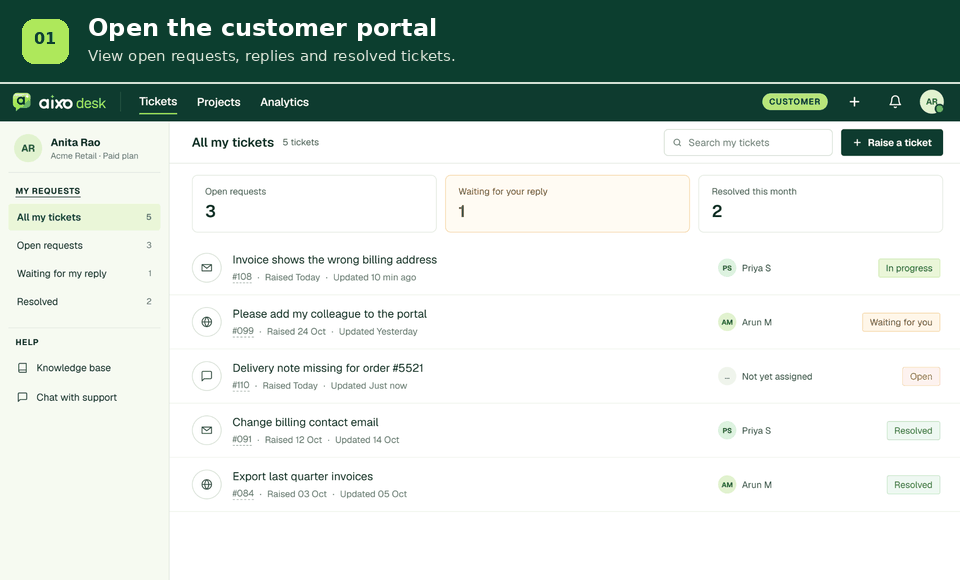
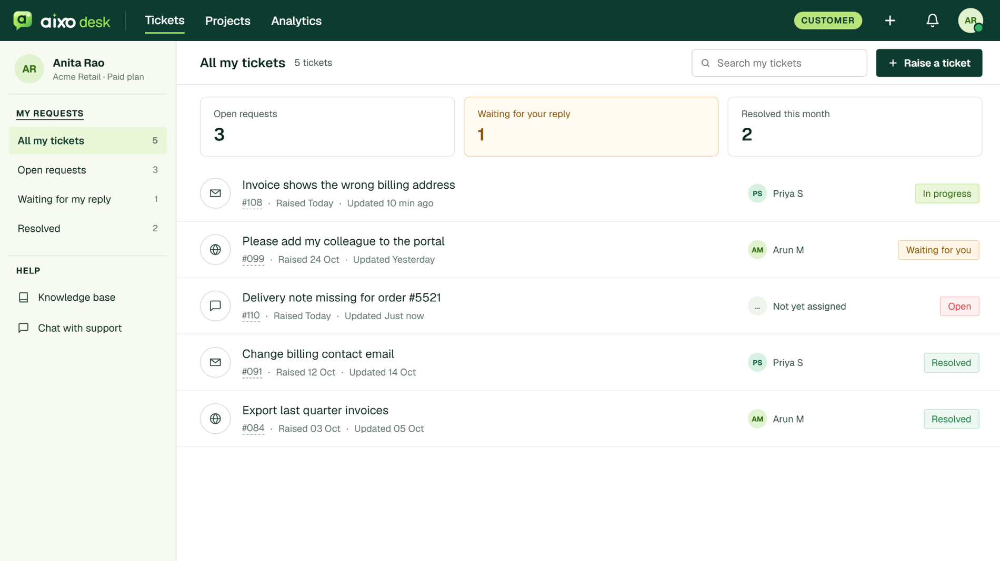
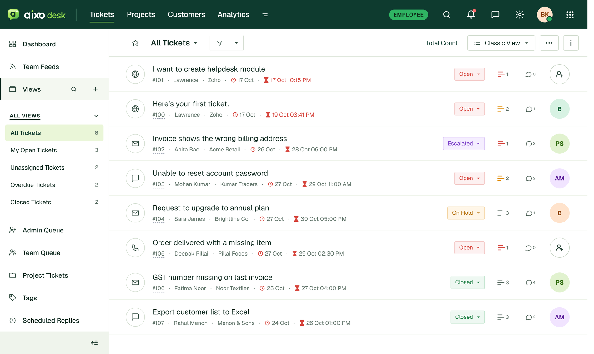
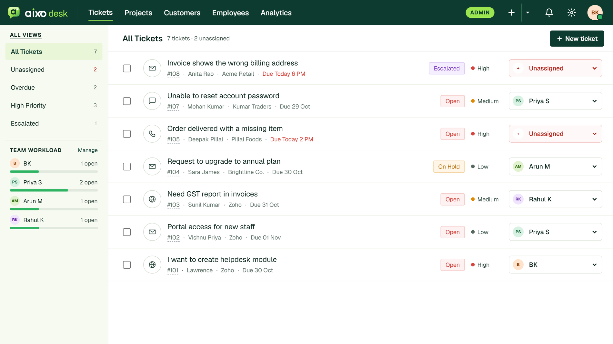
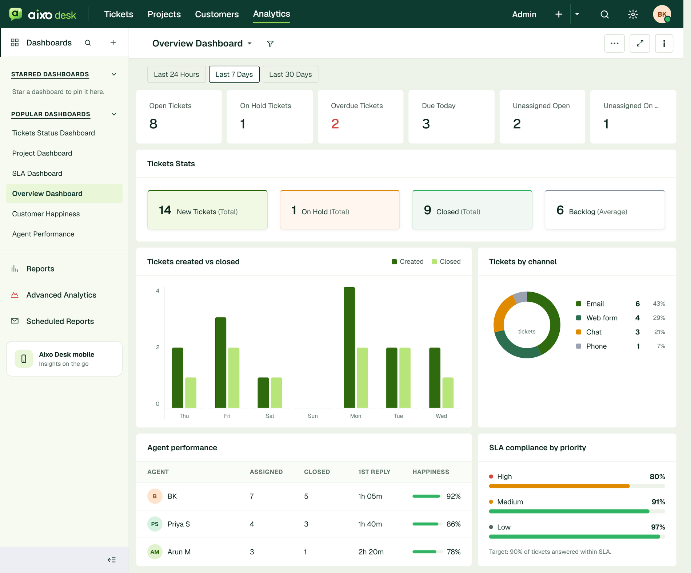
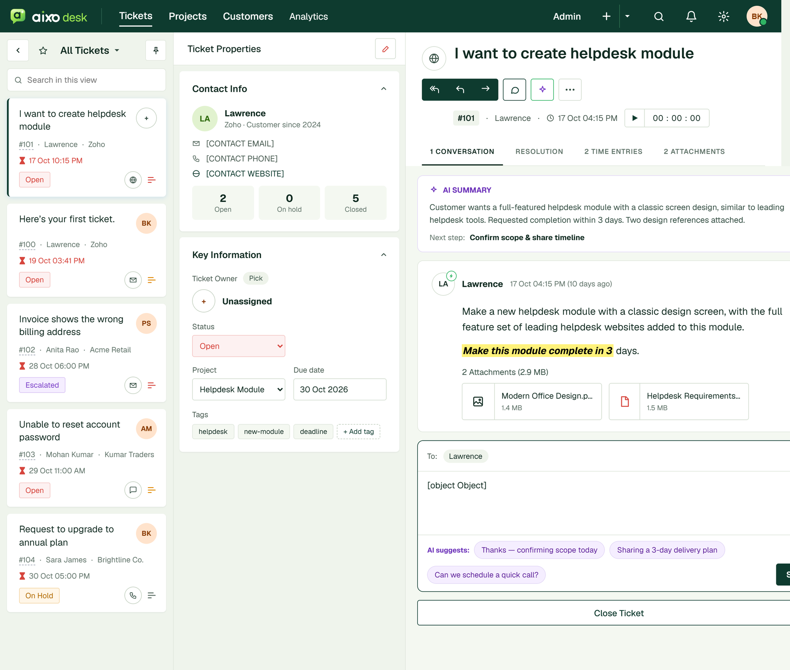
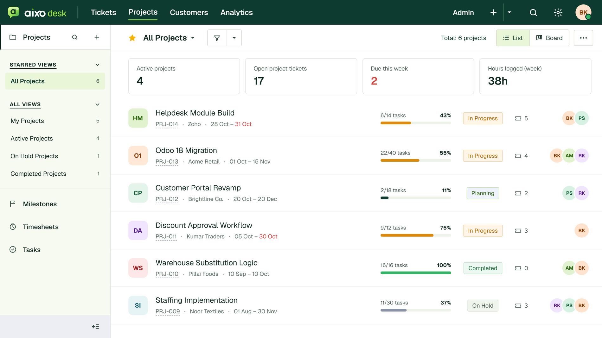
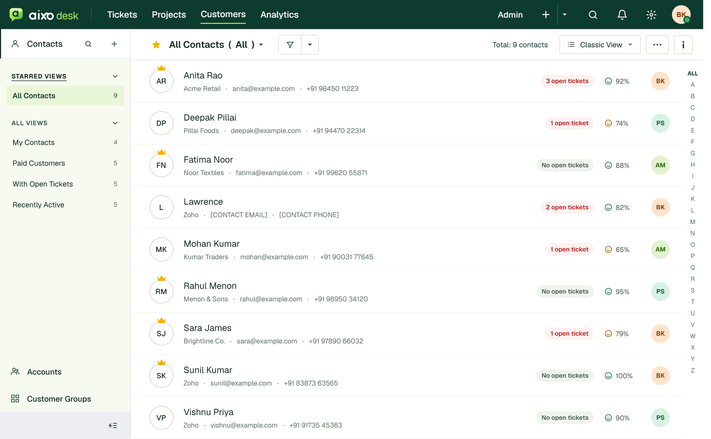
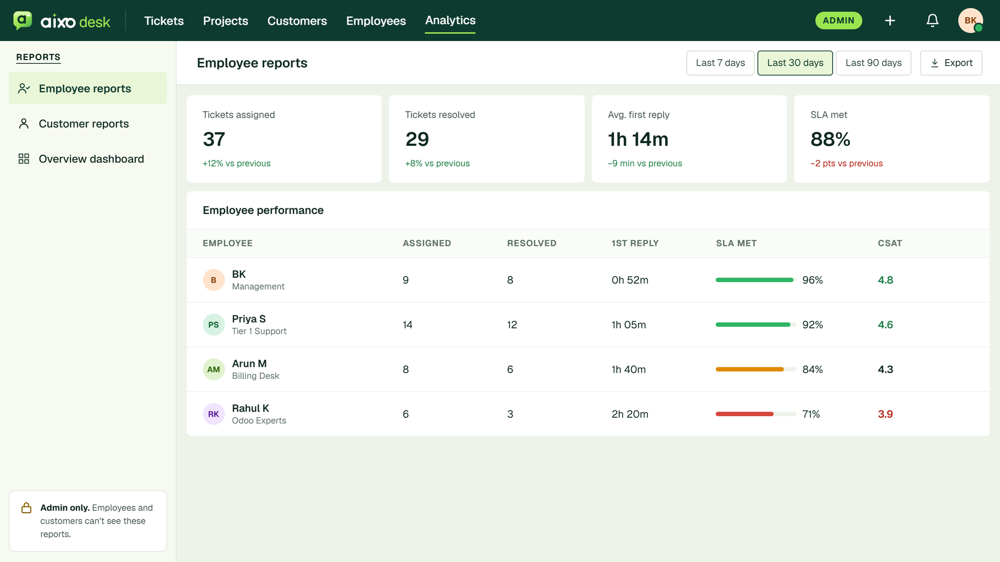

One connected workspace for customers, support teams and administrators.
Manage customer requests, ticket conversations, team assignments, projects and service performance through a unified support workflow.
AIXODESK connects customer-facing requests with the internal work of support agents and administrators. Customers can raise tickets and follow updates, agents can manage conversations and progress, and administrators can coordinate teams and monitor service activity.

Each role gets a dedicated workspace, while tickets, communication history, attachments, notifications and service tracking remain connected through the same helpdesk workflow.
Raise tickets, follow updates, reply to agents, search the Knowledge Base and rate the service.
Work assigned and unassigned team tickets, communicate with customers, log time and resolve requests.
Manage teams and employees, assign tickets, configure SLA and routing rules, and review company-wide reports.
A shared ticket lifecycle keeps customers informed and gives support teams a clear next action at every stage.
A customer submits the portal form or emails the support address. A ticket number, New state and priority-based SLA deadline are created.
A category or project routing rule selects a team. Manual, Round-robin or Least-loaded assignment can select an agent.
The agent opens the ticket and it moves to In Progress. The first public reply records the first-response time.
When more information is needed, the ticket moves to Waiting on Customer and the SLA timer pauses. A customer reply resumes work.
An agent or admin can transfer a ticket to another team or agent, with the reason recorded in the activity log.
The agent adds a resolution note. The customer receives the resolution and a service-rating request.
Customers can close a resolved ticket, or it can auto-close after the configured number of days. Reopening is allowed within the configured window.

Customers can raise a request in under a minute, follow its progress and communicate with support without relying on long email threads. Customer users see only tickets they are allowed to access and public replies.
The Employee Portal is the agent’s daily workspace. Its navigation, ticket queue and ticket details help agents work through assigned and team-unassigned tickets.


The Admin Portal gives support managers a company-wide view of service operations. Admins manage people, teams, ticket routing, SLA policies and reporting, with visibility across tickets including internal notes.
Keep service expectations visible and help the right people respond when ticket activity changes.
Set first-response and resolution targets by priority and select the applicable business calendar.
Ticket events notify the relevant customer, assigned agent, team lead or administrator.
Review SLA met percentage, response and resolution times, backlog, trends and ratings in analytics.
AIXODESK analytics provides company-wide and agent-level visibility into support activity.

Review volume trends, current backlog, ticket categories and distribution by team.
Review ticket volume, first-response and resolution times, and SLA performance.
Use customer ratings and service trends as part of operational review.
Explore the connected areas that support everyday helpdesk operations.

Keep customer communication and ticket context together.

Connect project work with customer support operations.

Access customer information from the support workspace.

Review employee and customer service information.
Access is organised through AIXODESK security groups and role-based portal permissions.
Customers see their own and own-company tickets and public messages. Internal notes and agent-to-agent messages remain private to internal users. Each portal presents the actions permitted for its role while sharing the same ticket records and support history.
Give customers a clear way to get help, give agents a focused place to resolve requests, and give administrators the visibility to manage service with confidence.